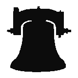

 The BellsAbel RudhallmThe north west tower of St. Fin Barre's Cathedral houses a ring of eight bells which are among the finest in Ireland. They were cast in 1751 by Abel Rudhall of Gloucester in England and were hung in the previous Cathedral. It is almost certain that bells have been in every church erected on this site since St. Fin Barre founded it, for they have always been associated with Irish Christian worship. HandbellsNeither history nor legend combined can give us a really true picture of the origin of bells and there is no firm evidence of the use of large ones before the dawn of Christianity. There is no mention made of their use in the Bible but it would appear that they were known in China and in India long before the ancient Greeks and Romans refer to them in their writings. It is said that when Patrick, our Patron Saint, first preached here he copied a practice of ringing a bell during worship from the native Druids and he gave one to each bishop he consecrated as part of his equipment. These, of course, were hand bells and were rectangular in shape and made from sheet iron, folded over and rivetted and then dipped in molten bronze to improve their tone - often without much success. Many of them are still in existence, including St. Patrick's own bell which is preserved in our National Museum in Dublin. AssicusThe art of bell-founding is obviously a very old one and it is of interest to note that a bishopconsecrated by St. Patrick in 448 AD, named Assicus, is described in the Annals of Ulster as a "priest and bell-founder". He was Bishop of Elphin in Connacht. We do not know where he learned his trade but it could very well have been in a monastery, for until about the 14th Century almost all the bell casting was done in the abbeys and monasteries. Bell-FoundingTo make a bell a "core" or centre piece was moulded from suitable clay and allowed to harden. It was then coated thickly with wax, and another skin of clay, known as a "cope", was placed around it. Some holes were drilled around the lower edge and when heat was applied the wax melted and ran out through these holes. The space left between the core and the cope was then filled with molten metal. The loops on the crown of the bell, known as "canons" and from which the bells were suspended, were formed from straw coated with the same clay to the required shape. The straw was then set on fire and metal poured in to replace it. The metal used has changed very little throughout the ages. It is composed of pure copper and tin in the approximate proportions of 13 to 4 and is very durable subject only to an initial surface corrosion (or verdigris) which forms a protective coating against further oxidisation. The Bell TowerThe first mention we have of the erection of a bell tower for the Cathedral on this site occurs in the year 1670, when it is noted that £5 was given for that purpose by John Follit who later became Registrar of the Diocese. Further subscriptions and grants were made, and in 1676 Dean Pomeroy was authorised to build a bell tower which was completed the following year. We do not know how many bells were in it, but one was sold to the town of Mallow in about 1680 and another to one Nicholas Fitton in 1766. The bells were originally hung in a wooden frame which had become considerably decayed by 1802 and had to have extensive repairs. In 1820 another overhaul was needed, while in 1861 the sixth bell (note E) had to be recast at a cost of £82-4-4, by John Warner & Sons, London. InscriptionsAs the craft of bellcasting developed the founders began to put decorations and inscriptions on their bells. A list of those on ours appears below; in addition, each is marked "A.R. 1751". Re-hangingOn 8th March, 1865 the bells were removed to the Customs House Vaults and stored there for five years, while the 18th Century Cathedral was being demolished and the present one erected. As the steeples were not built until some years after its consecration on St. Andrew's Day, 30th November, 1870, the bells were hung as a chime in what is now our Ringing Room. They were raised to their present bell chamber in 1903, when the first three (C.B.A.) were recast by John Taylor & Sons, Loughborough, and all were hung in a steel frame on roller bearings until 1957, when they were re-hung on ball bearings of the most modern type and they are now a joy to ring and to listen to. |